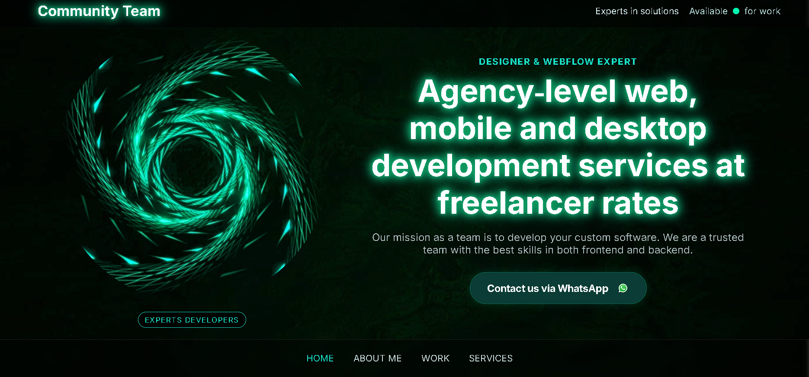
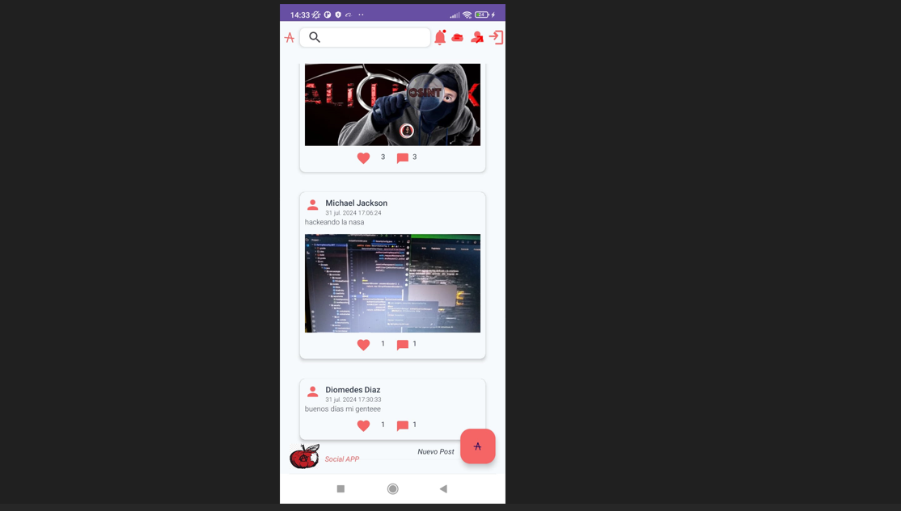

Hola, soy Jorge Meneses
Soy un Desarrollador Web y Mobile, especializado en Backend. Creando soluciones innovadoras y estéticas.

Soy un Desarrollador Web y Mobile, especializado en Backend. Creando soluciones innovadoras y estéticas.

Soy Jorge Andrés Meneses Peñaranda. Poseo 3 años de experiencia laboral en el ámbito del desarrollo. Soy un desarrollador versátil con un sólido dominio de **Python**, utilizando frameworks como **Flask y FastAPI**, y con experiencia en seguridad mediante **JWT**. Tengo una base robusta en desarrollo web con **HTML, CSS y JavaScript**.
Manejo una variedad de bases de datos, tanto relacionales (**PostgreSQL, MySQL, SQLite**) como no relacionales (**MongoDB, Firebase**). Mis conocimientos se extienden a la orquestación y despliegue básico con **Docker** y la plataforma **AWS**.
Adicionalmente, poseo experiencia en **Java** para el desarrollo de aplicaciones móviles con **Android Studio y XML**, complementado con conocimientos básicos de **Spring Boot e Hibernate** para el desarrollo backend. Como extra, también poseo conocimientos en el sistema operativo **Linux**, ya que por mucho tiempo fue mi SO preferido.
Me encanta trabajar en proyectos enfocados al desarrollo web y móvil.
Descargar CV
Es un proyecto en el cual varios entusiastas de la programación ofrecemos nuestros servicios. Esto está orientado al freelance y este sitio fue diseñado y programado por mí.

Es un proyecto enfocado al aprendizaje del lenguaje Java. Este cuenta con varios módulos, desde lo más básico hasta técnicas más avanzadas.

Proyecto personal enfocado a tener una red social sin censura donde se pueda tener libertad de expresión. Está hecho en Kotlin y Firebase.
Estoy siempre abierto a nuevas oportunidades y colaboraciones. Si tienes un proyecto en mente o simplemente quieres saludar, no dudes en contactarme.